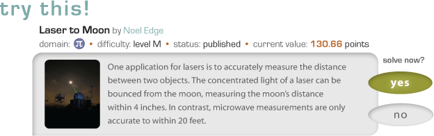

Teach Ourselves offers students of all ages, aptitudes, and interests opportunities to lean more about the STEM disciplines by solving and creating problems and creating problems within the community...and earn valuable points at the same time.

convinced?
want to help your child or student become a TO scholar? launch the application and get started right away.
it’s fast and simple and there’s on online community waiting to welcome you and help you get started.
Teach Ourselves is a new project from the University of Arizona, Department of Computer Science. It will be a society for students in which learning and creativity are rewarded with points that can be redeemed for goods. Currently, Facebook serves as the portal to the application.
Research has demonstrated that problem posing, solving, critiquing, and curation are highly productive learning strategies ideally suited for online communities.
To build students' interest in science, technology, engineering, math and computer science, and to help students understand that they can be rewarded for creative and collaborative intellectual work.
Paul Cohen • Paul is a professor and department head for Computer Science at the University of Arizona, Tucson. He directs research on artificial intelligence, machine learning, cognitive robotics.
Carole BealI • Carole is a professor of Cognitive Science at the University of Arizona and does research on technology-based learning for K12 math and science.
Jane Strohm • Jane is researching Education Informatics at the University of Arizona. She is an experienced science teacher, trained in gifted and bilingual (Spanish) education with an emphasis on biology and chemistry.
Teach Ourselves uses a Facebook application to engage youth in earning rewards by solving, creating, and sharing problems about science, technology, engineering and mathematics (STEM) topics. The ultimate goal is to improve STEM knowledge and inspire more individuals to pursue STEM careers.
Mentors use the Facebook application to review and approve problems to support scholars in improving STEM knolwedge and earning rewards. All discussions between scholars and mentors is monitored. Mentors also supervise and participate in group and 1:1 discussions about STEM topics.
An adult STEM professional employed by our partners: University of Arizona faculty, staff, graduate student
Teach Ourselves uses a Facebook application to engage youth in earning rewards by creating, sharing, and solving problems about science, technology, engineering and mathematics (STEM) topics. The ultimate goal is to improve STEM knowledge and inspire more individuals to pursue STEM careers.
Use the Facebook application to solve and write problems to support improving STEM knolwedge while earning points that can be redeemed for rewards. Scholars are assigned a mentor who approves the problems. All interaction between scholars and mentors is monitored.
Scholars create complete, accurate and appropriate problems. Each problem that is approved can then be sold for publication. Selling for publication earns the scholar points that can be redeemed for a gift certificate from iTunes or Amazon (during the pilot).
Starting May 2011, the pilot will test the basics of the Facebook application allowing mentors and high school-aged scholars to discuss original problems ; verify the work-flow from a scholar writing a problem, discussing with the group, submitting to the mentor for approval, to publication and sharing of the problem; and determine patterns in solving other published problems.
Suggest your school, afterschool program or summer program host Teach Ourselves pilot. Wait until the app is released for all youths on Facebook. "Like" us and watch for updates.
The Teach Ourselves (TO) Facebook application allows youth to connect with each other and science, technology, engineering, and mathematics (STEM) mentors to build science and math knowledge while earning real rewards.
Facebook is an established social network that a vast majority of youth, ages 13+, access regularly. There are many games and applications hosted within Facebook, but few that offer the opportunity to gain academic knowledge while earning real rewards in preparation for a future STEM profession.
There's a lot to learn about Facebook. Your child's profile can be modified and customizable. Talk to your child about what is displayed and what privacy permissions make sense for your family. For more information try these resources:
TO mentors are STEM professionals employed by our partners. They have been trained by our staff and all communication with the scholars occurs within the monitored Facebook Teach Ourselves applications.
If your student is participating in Teach Ourselves, explore details to find out more.
Teach Ourselves uses a Facebook application to engage youth in earning rewards by solving, creating, and sharing problems about science, technology, engineering and mathematics (STEM) topics. The ultimate goal is to improve STEM knowledge and inspire more individuals to pursue STEM careers.
UA Scientists Using Facebook to Build Learning Tool • UA News UA Scientists Using Facebook To Build 6-12 Learning • Tool Campus Technology DARPA seeks to shape young minds • Government Computer News UA scientists to develop social media education • Arizona Daily Wildcat State of Ohio Education • blog post